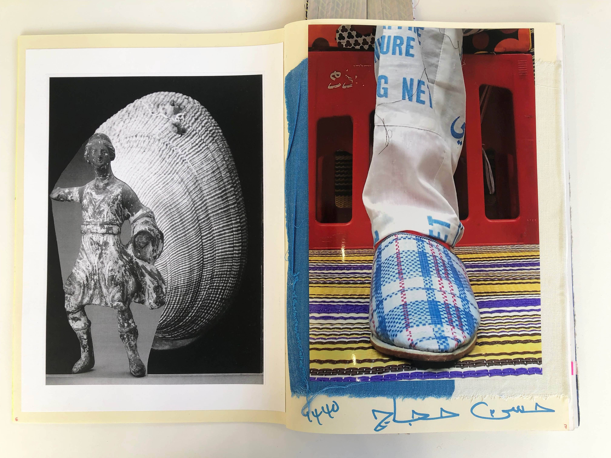
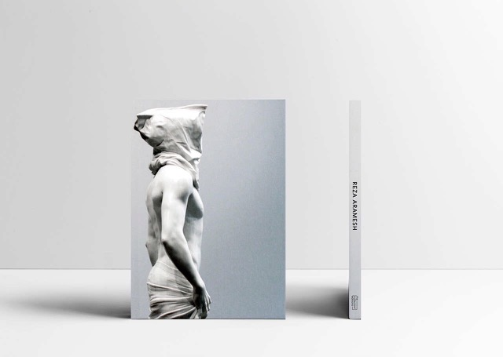

Three imposing figures dominate the room. They are silent sentinels, perfect in their stillness and in the gloriously smooth lines of their white, marble torsos, and perfectly proportioned limbs. And yet – unlike the great Renaissance heroes they evoke, their hands are bound, faces obscured and they have been humiliatingly stripped of their clothes. Site of the fall - study of the renaissance garden, like much of Reza Aramesh’s work, investigates conflict, as well as how it has been represented (along with the human body) throughout history. Those familiar with his work will know the tantalising obtuseness of each work’s title, for they provide the specific time and date of a particular event – but leave out the location.
Site of the fall - study of the renaissance garden continues Aramesh’s interest in media images and reportage, probing the idea of the classic beauty of a Renaissance Garden through the figures of young men being tortured and humiliated. “I wouldn’t say I’m interested in suffering, per se, but I do use that iconography,” explains Aramesh. “Rather, what I’m trying to do is navigate through the history of conflict, and in doing so, examine the iconography of conflict and suffering and put it in a dialogue with its historical context.” That is, human beings don’t change – there’s universality about our behaviour, no matter what race, gender or age we are. Take a suffering saint or victorious hero sculpted in marble five centuries ago, or go back even further and look at Homer’s Illiad, and they will all have something in common, says Aramesh. “When Homer writes about the Trojan War, and conflict, human relationships, power, revenge, settlement and human fallibility, he could be writing about today. Perhaps the way we write about or cover war has changed, perhaps the use of technology has changed, and borders, races and ideologies have shifted, but the essence of it all – that is, we, as humans – have not changed. It’s precisely this thread that I’m interested in.”
You recently had work in the Met Breuer’s Like Life: Sculpture, Color and The Body in New York. It showcased seven centuries of sculptural practice. Did it feel like your sculpture was with its extended ‘family’?
I cannot express how exciting it was for me. So much of my work is about art historical dialogue, referencing themes and aesthetics from other eras – particularly the Renaissance. Then along comes a show like this, in which a curator decides to link all these historical representations of the body across time and space and, for an artist like me, I don’t know that there is anything more overwhelming than being able to have your work put directly into that conceptual dialogue.
Speaking of your work in dialogue – how much does it engage with its location?
A fair bit – in this sculptural series in Site of the fall - study of the renaissance garden, for example, I chose to mount the works on soil instead of plinths. I’ve used soil in Dubai and in Baku (where one was shown previously), but when I showed in Atlanta at SCAB, for example, I used the local red earth, which is what makes the city’s iconic red brick buildings. I wanted to use the earth because interestingly, and not entirely coincidentally, it referenced the fact that many of these buildings were built by Black slaves. There were a lot of layers and history there in such a humble material that resonated quite powerfully with my sculptures. And, of course, earth also evokes the idea of a garden – and these works draw on the concept of the Renaissance Garden, which is a place of great beauty and lushness. However, here, we have these figures standing in barren earth, as if it’s after the fall – but the fall of what?
Recently, you’ve also been going back to ‘basics’ by working on graphite drawings, haven’t you?
I graduated as a painter, so drawing is something I always go back to. I love that it is a very physical process. In a lot of my sculptural and photographic work I work with third parties, and the collaboration is so enriching, but when I draw, it is such an immediate and direct process, I find that very gratifying. Watch this space.
Speaking of doing things by hand, your Centrefold Project, a special collection of hand-produced artist magazines you began in 2003 is marking its 10th issue. How did it come about?
When I graduated from university, I wanted to create an art magazine, one that was more artist-focused: less about critical art writing, more about showcasing the artwork itself. I had various meetings and discussions, but, ultimately, to dedicate myself fully to launching a regular magazine would have meant putting my own art aside. However, the idea lingered, until, in 2003, various threads came together.
Which were?
The first was that a nomadic gallery called Mobile Home invited me to curate an exhibition for them, though sadly the gallery closed just two weeks before the show was set to open! Simultaneously, I found myself absolutely fascinated by a guy who worked at my local fish n chips shop: he would obsessively create these fantastic drawings and then tape them onto the wall in the restaurant. He wasn’t a classically trained artist, but these drawings were just pouring out of him. I was very struck by them, and the effect of pinning them all up on that wall. Finally, I found myself thinking back to my own childhood, when I had a scrapbook I had entitled ‘Thought Books’. I would invite friends and family across all generations and professions and interests to write their thoughts on various topics I picked – all the usual dramatic ‘deep’ philosophical thoughts a young boy wants to discuss: life, death, etc.

Centerfold, Hassan Hajjaj and Simon Morati
And so what was the catalyst for all these disparate things coming together?
Pretty much. I thought: gosh, what if I take all these amazing ideas that these artists explore, and I create something with the sensibility of a scrapbook, but becomes an exhibition of sorts. It was the Victorian era that popularised the scrapbook, where it was seen as a mainly women’s activity, and I liked this idea of gender and activity, the conceptual strength of a curated, physical publication, and collaboration and exchange between different minds. We made 61 copies of that first issue, and it was super low-fi, I’m talking photocopies of images and hand-written notes. We sold almost no copies at all of our first and second editions, and then, in our third, the amazing Frank Koenig, of Koenig Books, came across them and he completely understood what we were trying to do. That was when it finally started to take off.
What’s the process like in compiling an issue and how often do they come out?
The whole production is incredibly organic. I don’t like to pre-set a theme. Once we have people’s collaborations and pieces in, I piece everything together, and a title or theme will be born out of that – sometimes reflecting what I’m seeing in the content itself, at other times, what I’m seeing the content reflecting from current events. Centrefold Project is very artist-led and full of such interesting compositions, juxtapositions and dialogues – a highly visual and figurative artist’s work can speak to that of a very conceptual one, and so on. It captures the hand of the artist in a very raw and direct way, which, in the world of publishing I think is quite special.
Speaking of books, you have a new eponymous monograph out, and published by Leyla Fakhr of The Collectors Editions…

Reza Aramesh monograph, published by The Collector's Edition
I do. When Leyla and I sat down to discuss it, we both felt that, rather than simply producing a monograph of work to date, what would be interesting would be to focus specifically on my sculptural works, from my polychrome creations onwards. There are, of course, some photographic works included, as they relate to certain sculptures, but ultimately, it is a really comprehensive look at my sculptural practice.
Site of the fall - study of the renaissance garden runs at Leila Heller Gallery in Dubai until 12 March 2019; Reza Aramesh: 12 noon, Monday 5 August, 1963 will run at the Asia Society Museum in New York from 5 March – 9 June 2019.
 I’m trying to navigate through the history of conflict, and in doing so, examine the iconography of conflict and suffering and put it in a dialogue with its historical context. That is, human beings don’t change – there’s universality about our behaviour, no matter what race, gender or age we are."
I’m trying to navigate through the history of conflict, and in doing so, examine the iconography of conflict and suffering and put it in a dialogue with its historical context. That is, human beings don’t change – there’s universality about our behaviour, no matter what race, gender or age we are."